Each graph and chart includes many options that you can use to customize appearance, convey more information, or highlight data. Although graphs and charts plot data differently, they have several common options that you access from the shortcut menu. However, some options are available only for a specific type of graph or chart.
Use multiple scales on a graph or chart to display multiple plots that do not share a common x- or y-scale. Right-click the scale of the graph or chart and select Duplicate Scale from the shortcut menu to add multiple scales to the graph or chart. Right-click the plot in the plot legend and select the scale to associate with the plot from the X scale or Y scale shortcut menus.
You can add multiple x- and y- scales to waveform, XY, intensity, and digital waveform graphs. Mixed signal graphs and all charts support only multiple y-scales.
All graphs and charts, except for the 3D graphs, automatically enable autoscaling, which means they adjust their horizontal and vertical scales to fit the data you wire to them. By default, autoscaling is enabled for graphs and charts. However, autoscaling can slow performance. Right-click the graph or chart and select X Scale�AutoScale X or Y Scale�AutoScale Y from the shortcut menu to turn autoscaling on or off.
|
Note��For the Compass Plot, Error Bar Plot, Feather Plot, and XY Plot Matrix, select Autoscale X or Autoscale Y from the shortcut menu. |
Use the Operating tool or the Labeling tool to change the horizontal or vertical scale directly.
|
Note��LabVIEW does not include hidden plots when you autoscale the axes of a graph or chart. If you want to include the hidden plots when you autoscale, make the hidden plots transparent instead. Right-click the plot image in the plot legend and select Color from the shortcut menu to change the color of plots. |
When a graph or chart scale resizes, other elements on the graph or chart move and resize. To disable this behavior so the plot area size stays fixed, right-click the graph or chart and select Advanced�Auto Adjust Scales from the shortcut menu. If you disable this behavior, the scales might clip or overlap each other.
|
Note��The Auto Adjust Scales option does not apply to the Compass Plot, Error Bar Plot, Feather Plot, XY Plot Matrix, or the 3D graphs. |
To configure the scales for the graph or chart, right-click the graph or chart and select Properties from the shortcut menu to display the Graph Properties dialog box or Chart Properties dialog box. Use the Display Format page of the Properties dialog box to specify how the scales of the x-axis and y-axis appear on graphs or charts, except for the 3D graphs. By default, the x-scale has a label of Time and the y-scale has a label of Amplitude. Use the Format page of the 3D Plot Properties or 3D Graph Properties dialog boxes to specify how the scales of the axes appear on the 3D graphs.
Use the Display Format or Format pages also to specify a numeric format for the scales of a graph or chart. Select Advanced editing mode to display the text options that let you enter format strings directly. Enter format strings to customize the appearance and numeric precision of the scales.
Click the Scales tab of the Properties dialog box, the Axes tab of the 3D Graph Properties dialog box, or the Axis page of the 3D Plot Properties dialog box to rename the scale and to format the appearance of the axis scale.
Customize the appearance of a graph or chart with the shortcut menu options. Right-click the graph or chart and select Visible Items from the shortcut menu to display or hide the following options:
|
Note��These options are not available with the 3D graphs. |
Use the plot legend of graphs and charts to view the plots LabVIEW draws on a plot area and to customize how a plot appears in the graph or chart. Customize a plot legend by using the Legend properties programmatically.
|
Note��The plot legend of the Compass Plot, Error Bar Plot, and Feather Plot is different from the plot legends on the other graphs. |
To add a plot to a plot legend, use the Positioning tool. Use the Appearance page of a graph or chart Properties dialog box to specify the number of plots in the plot legend of a graph or chart. You also can use the Legend:Number of Rows property to set the number of plots in the plot legend programmatically.
To choose whether to display a plot on a graph or chart, right-click the glyph in the plot legend and select Plot Visible from the shortcut menu. If there are multiple plots, you also can right-click the plot legend and select Visible Items�Plot Visibility Checkbox to display a checkbox next to each plot. Use the checkboxes to choose which plots you want to display in the plot area.
Customizing the plots that appear in the plot area of a graph or chart helps distinguish each plot from another. Use the plot legend to customize how each plot appears in the plot area of a graph or chart. Click a glyph in the plot legend and select from the following options in the shortcut menu to customize how the plot appears in the plot area of a graph or chart:
You also can use the Plot properties to customize how a plot appears in the plot area programmatically.
|
Note��The Common Plots, Line Width, Anti-Aliased, Bar Plots, Fill Base Line, Interpolation, and Point Style options are not available for digital waveform graphs. |
You can add a vertical or horizontal scroll bar to the plot legend of graphs and charts. Use a scroll bar to view plots in a plot legend without exposing all the plots at any one time.
Use the graph palette to interact with a graph or chart while you run the VI. Right-click the graph or chart and select Visible Items�Graph Palette from the shortcut menu to display the graph palette, shown as follows.
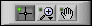
Click a button in the graph palette to move cursors, zoom, or pan the display. Each button displays a green LED when you enable the button. The graph palette appears with the following buttons, in order from left to right:
|
Note��The graph palette is not available for the 3D graphs. |
Each graph includes options that you can use to customize the graph to match your data display requirements. For example, you can modify the behavior and appearance of graph cursors or configure graph scales. The following illustration shows the elements of a graph.
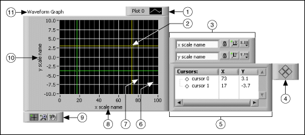
| 1 | Plot Legend |
| 2 | Cursor |
| 3 | Scale legend |
| 4 | Cursor mover |
| 5 | Cursor legend |
| 6 | Minor-grid mark |
| 7 | Grid mark |
| 8 | X-scale |
| 9 | Graph palette |
| 10 | Y-scale |
| 11 | Label |
|
Note��The plot legend for the Mixed Signal Graph and Digital Waveform Graph is on the left of the graph. |
You add the plot legend, scale legend, cursor legend, graph palette, and label by right-clicking the graph, selecting Visible Items from the shortcut menu, and selecting the appropriate element.
|
Note��The Plot Legend, Cursor, Scale Legend, Cursor mover, Cursor Legend, and Graph Palette do not apply to the 3D graphs. |
Right-click the graph and select Visible Items�Cursor Legend from the shortcut menu to view the cursor legend. To add a cursor to the graph, right-click anywhere in the cursor legend, select Create Cursor, and select a cursor mode from the shortcut menu.
The cursor position is defined by the cursor mode. The cursor includes the following modes:
|
Note�� You cannot change the mode of a cursor after you create it. You must delete the cursor and create another cursor. |
Use a cursor on a graph to read the exact value of a point on a plot. The cursor value displays in the cursor legend.
|
Note��In a multi-plot graph or chart, the y value in the cursor legend may sometimes display in parentheses. This happens if there is no y value in the plot corresponding to the current x position of the cursor, and thus the y value has to be interpolated. |
 |
Tip��Use an annotation instead of a cursor to highlight data points on the plot. |
The following front panel shows an example of a graph with multiple cursors.
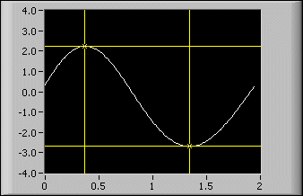
If you drag a graph cursor past the edge of the graph, the graph scrolls in the direction of the cursor. To disable this behavior, right-click the graph and select Advanced�Cursors Scroll Graph from the shortcut menu. If you disable this behavior, the scales do not update when you drag the cursor past the edge of the graph.
|
Note��The Cursors Scroll Graph option does not apply to the Compass Plot, Error Bar Plot, Feather Plot, and XY Plot Matrix. |
You can customize the appearance of the cursor in several ways. You can label the cursor on the plot, specify the color of the cursor, and specify line, point, and cursor style. Right-click the cursor legend row and select items from the shortcut menu to customize the cursor.
Use annotations on a graph to highlight data points in the plot area. The annotation includes a label and an arrow that identifies the annotation and data point. A graph can have any number of annotations.
|
Note��You cannot use annotations on the 3D graphs. |
The following front panel shows an example of a graph with annotations.
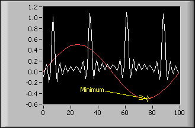
Right-click the graph and select Data Operations�Create Annotation from the shortcut menu to display the Create Annotation dialog box. Use the Create Annotation dialog box to specify the annotation name and how the annotation snaps to plots in the plot area.
Use the Lock Style pull-down menu in the Create Annotation dialog box to specify how the annotation snaps to plots in the plot area. The Lock Style component includes the following options:
You can customize the behavior and appearance of the annotation in several ways. You can hide or show the annotation name or arrow in the plot area, specify the color of the annotation, and specify line, point, and annotation style. Right-click the annotation and select options from the shortcut menu to customize the annotation.
To delete the annotation, right-click the annotation and select Delete Annotation from the shortcut menu. Right-click the graph and select Data Operations�Delete All Annotations from the shortcut menu to delete all annotations in the plot area.
Customize the graph plot area of intensity, mixed signal, and waveform graphs by drawing a background, foreground, or middle image in the plot area. The canvas for drawing plot images has a coordinate system in which the origin (0,0) is always located at the top, leftmost corner of the graph plot area. You can use the Plot Images properties of the IntensityGraph, MixedSignalGraph, and WaveformGraph classes to create custom grids in the background, data envelopes in the middle, or use shapes to annotate data points in the foreground of the graph plot area.
The following front panel displays an example of how to create circles to annotate data points and an envelope to designate a defined tolerance for the data.
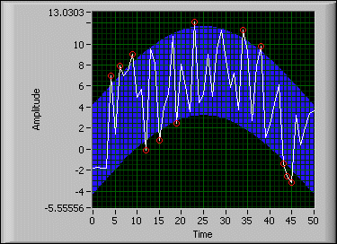
The background image resides behind the plot data and the grid lines. Use the Plot Images:Back property to set this image for mixed signal and waveform graphs.
The foreground image resides in front of the plot data and the grid lines. Use the Plot Images:Front property to set this image for intensity, mixed signal, and waveform graphs.
The middle image resides between the grid lines and the plot data. Use the Plot Images:Middle property to set this image for mixed signal and waveform graphs.
|
Note��You can draw images only in the foreground of an intensity graph. |
When you use the Plot Images properties, LabVIEW draws the image beginning at the origin of the graph plot area. If you want to use the Plot Images properties to draw an image that uses the graph data points as references rather than the plot area origin (0,0), use the Map XY To Coordinates method to map the graph coordinates of the data points to coordinates on the front panel. The Map XY To Coordinates method allows you to account for the offset of the plot area of the graph from the origin of the front panel to find the correct location in which to draw. The following block diagram displays one option you can use to find the correct location in which to draw.
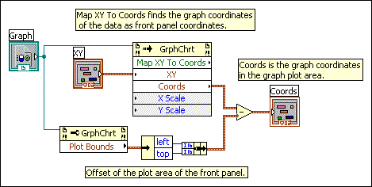
|
Note��Using splitter bars on the front panel creates multiple panes. You then account for the offset of the plot area of the graph from the origin of the owning pane on the front panel. |
Refer to the WaveformGraph properties, the IntensityGraph properties, and the MixedSignalGraph properties for more information about the Plot Images properties each graph supports.
If you want to remove images, you must wire an empty image to the appropriate property, or you must make the image transparent. Also, when you resize or copy the graph with custom annotations or envelopes, you must rerun the VI to redraw the image.
Refer to the labview\examples\Controls and Indicators\Graphs and Charts\Graphs - General\Graphs - General.lvproj for examples of using the Plot Images properties and the Map XY To Coordinates method.
 Open example�
Open example�
 Find related examples
Find related examples
Customize the digital waveform graph to display one of two views of the plot legend, set the type of data displayed in the plot area, and alter the appearance of the digital lines and buses in the plot area.
The digital waveform graph provides two views of the plot legend. The following plot legend in tree view is the default view that allows you to view digital lines and buses and to expand and contract digital buses.
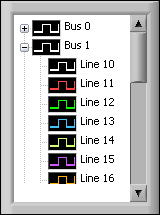
To expand and contract buses in the tree view of the plot legend, click the expand and contract symbol to the left of the bus. Scroll bars appear automatically when a bus or line name exceeds the size of the plot legend and when the amount of lines, buses, or lines and buses exceeds the size of the plot legend.
You can customize line thickness, set transitions type and location, format graph labels, and specify names for digital lines and buses that appear on digital waveform graphs. Use the Group Digital Signals Express VI to group digital waveforms in the order you want to view them in the digital waveform graph.
The following plot legend is the standard view of the plot legend and allows you to view digital lines or buses.
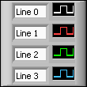
To change the tree view of the plot legend to the standard view of the plot legend, right-click the digital waveform graph and select Advanced�Change Plot Legend to Standard View from the shortcut menu. To change back to the tree view of the plot legend, right-click the digital waveform graph and select Advanced�Change Plot Legend to Tree View from the shortcut menu.
|
Note��LabVIEW deletes any allocated lines when you change from the standard view of the plot legend to the tree view of the plot legend, including any custom line settings. Additionally, you cannot allocate lines in the plot legend when the tree view is enabled. |
To disable the plot legend regardless of the selected view, right-click the digital waveform graph and select Advanced�Disable Plot Legend from the shortcut menu to place a checkmark next to the menu item. You also can use the Legend:Disable property to disable the plot legend programmatically.
To resize the plot legend, move the Positioning tool over the legend border. When resizing handles appear at the corners of the legend, drag a handle up, down, left, or right and release the mouse button when the legend is the desired size.
By default, the digital waveform graph displays both digital lines and buses in the plot area. Customize the plot area of the digital waveform graph to display only the data you want to view.
If a digital waveform graph includes digital data in both drive and compare logic states, by default the compare data appears darker on the plot than the drive data. If you do not want to darken compare data, right-click the plot and select Advanced�Darken Compare Data from the shortcut menu to remove the checkmark. You also can use the Darken Compare Data property to darken compare data programmatically.
|
Note��This feature primarily applies to users generating digital I/O signals. Compared or expected response data refers to the marked highs and lows in a binary data stream. LabVIEW darkens these values to distinguish highs and lows from the rest of the drive or stimulus data. |
The following front panel shows darkened compare data.
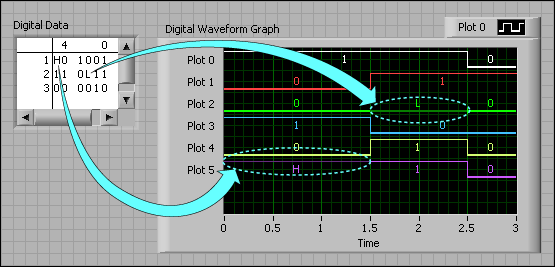
You can customize the appearance, format, plot styles, scales, and cursors of the Compass Plot, Error Bar Plot, Feather Plot, and XY Plot Matrix when you right-click a 2D graph and select Properties from the shortcut menu to display the Properties dialog box.
Use the plot legend to the right of the graph to customize the plots for the Compass Plot, Error Bar Plot, and Feather Plot. Click the plot name to edit the name. Change the appearance of a plot by clicking the image on the right of the plot name to display the following options:
|
Note��To close the dialog box, click the checkmark to make changes or the red x to cancel changes. |
Refer to the labview\examples\Controls and Indicators\Graphs and Charts\Math Plots - 2D directory for examples of plotting data on a 2D graph.
Find related examples
You can customize the Appearance of all 3D graphs when you right-click a 3D graph and select Properties from the shortcut menu to display the Properties dialog box.
For the 3D graphs, except the 3D Line, 3D Parametric, and 3D Surface graphs, right-click the graph and select 3D Plot Properties from the shortcut menu to display the 3D Plot Properties dialog box. Use this dialog box to customize the graph, lighting, axes, value pairs, format, and cursors.
For the 3D Line, 3D Parametric, and 3D Surface graphs, right-click the graph and select 3D Graph Properties from the shortcut menu to display the 3D Graph Properties dialog box. Use the 3D Graph Properties dialog box to format the properties of a 3D graph. Manipulate the controls on each page of the dialog box to change the appearance of the 3D graph.
(Windows) Because the ActiveX 3D graphs use ActiveX technology and VIs that handle 3D representation, you set options for the ActiveX 3D graphs differently than you set options for other graphs. While creating an application, use the ActiveX Control Property Browser to set properties for an ActiveX 3D graph. Right-click the ActiveX 3D graph and select Property Browser from the shortcut menu to display the ActiveX Control Property Browser. If you want to allow users to change common properties at run time or you need to set a property programmatically, use the 3D Graph Properties VIs.
For the Bar and Pie graphs, use the color palette to the right of the graphs to customize each bar or pie slice. To change the name of a bar or pie slice, highlight the name and enter new text. To change the color of a bar or pie slice, click the color to the right of the name and select a new color.
For the 3D graphs, use the following projection palette near the bottom-right corner of the graph to customize the plane projection view:
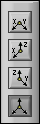
The projection palette contains the following buttons:
|
Note��The projection palette does not appear with the Bar, 3D Line, 3D Parametric, and 3D Surface graphs. |
Refer to the labview\examples\Controls and Indicators\Graphs and Charts\Math Plots - 3D directory for examples of plotting data on a 3D graph.
Find related examples
Refer to the labview\examples\Controls and Indicators\Graphs and Charts\Math Plots - 3D directory for examples of plotting data on a 3D graph.
Find related examples
Unlike the graph, which displays new data that overwrites any stored data, the chart updates periodically and maintains a history of the data previously stored.
You can customize the chart to match your data display requirements. Options available for all charts include a scroll bar, the scale legend, the graph palette, a digital display, and representation of scales with respect to time. You also can modify the behavior of chart history length, update modes, and plot displays.
Refer to the Chart Data Types and Update Modes VI in the labview\examples\Controls and Indicators\Graphs and Charts\Waveform Graphs and Charts directory for examples of different kinds of charts and the data types they accept.
Open example�
Find related examples
LabVIEW stores data points already added to the chart in a buffer, or the chart history. Right-click the chart and select Chart History Length from the shortcut menu to configure the history buffer.
|
Tip��Large chart history values can be memory intensive. Unlike graphs, charts keep the history of data previously written. When a chart runs continuously, its history grows and requires additional memory space. This continues until the chart history is full, then LabVIEW stops taking more memory. LabVIEW does not automatically clear the chart history when the VI restarts. You can clear the chart history throughout the execution of the program. To do this, write empty arrays to the History Data attribute node for the chart. |
View previously collected data using the chart scroll bar. Right-click the chart and select Visible Items�X Scrollbar from the shortcut menu to display a scroll bar.
Configure how the chart updates to display new data. Right-click the chart and select Advanced�Update Mode from the shortcut menu to set the chart update mode. The chart uses the following modes to display data:
You can display multiple plots on a waveform chart by using a single vertical scale, called overlaid plots, or by using multiple vertical scales, called stacked plots. The following front panel shows examples of overlaid plots and stacked plots.
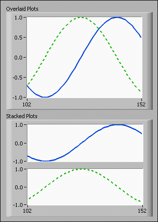
Right-click the chart and select Stack Plots from the shortcut menu to view the chart plots as multiple vertical scales. Right-click the chart and select Overlay Plots to view the chart plots as a single vertical scale.
You can export data from graphs, charts, tables, and arrays and then import the data to the clipboard, Microsoft Excel, or DIAdem.
|
Note��You must have Microsoft Excel installed to export data to Excel. You must have DIAdem installed to export data to DIAdem. Refer to the National Instruments Web site at ni.com/diadem to learn more about DIAdem and to download the latest version of DIAdem. |
For graphs and charts, you can export only data that is visible in the front panel window. For arrays and tables, you can select the cells, columns, and rows that you want to export. Before you export data, you can use techniques to customize how data displays.
The following information describes some caveats and recommendations to consider when you export data:
You can export images of graphs, charts, tables, picture controls, digital data, and digital waveform controls and indicators into presentations, email, text documents, and so on. When you export a simplified image, LabVIEW exports only the control or indicator, digital display, plot legend, and index display and does not export scroll bars, the scale legend, the graph palette, or the cursor legend. To export an image, right-click the graph or chart, and select Export�Export Simplified Image.
|
Note��The Export Simplified Image menu item is not available for intensity graphs, intensity charts, or 3D graphs. To export an image of a 3D graph, except for the 3D Surface Graph, 3D Parametric Graph, and 3D Line Graph, right-click the 3D graph and select Export Image�Export to File. |
You can export images into the following formats:
(Windows) .emf, .bmp, and .eps files
(macOS) .pict, .bmp, and .eps files
(Linux) .bmp and .eps files
Save the exported image to the clipboard or to disk.